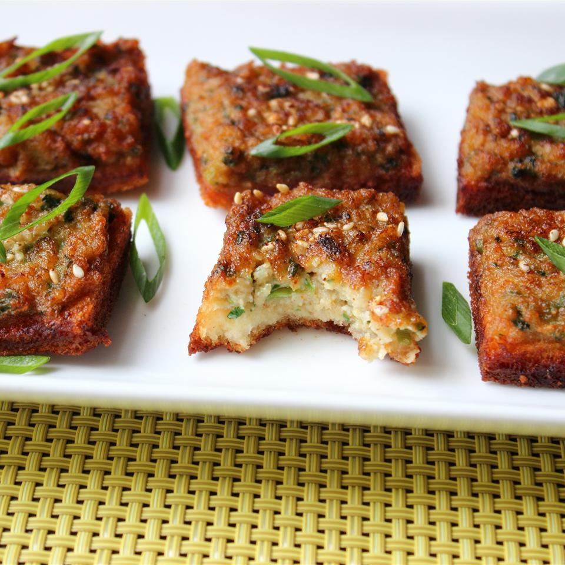

Shrimp Toast
While virtually unknown compared to most other popular fried party snacks,
these shrimp toasts are
easy to make and every bit as delicious, and addictive,
as those Buffalo wings or jalapeño poppers.

Ingredients
- ½ pound raw shrimp, peeled and deveined
- ¼ cup diced water chestnuts
- ¼ cup chopped cilantro leaves
- ½ cup finely sliced green onions, plus more for garnish if desired
- 3 garlic cloves, crushed
- 1 tablespoon finely grated ginger root
- 1 anchovy filet
- 1 teaspoon toasted sesame oil
- 1 teaspoon Asian fish sauce
- 1 tablespoon soy sauce, or more to taste
- 1 egg white
- ½ teaspoon white sugar
- ½ teaspoon paprika
- 1 pinch cayenne pepper
- 1 pinch salt
- 4 thick slices white bread
- 1 teaspoon Sesame seeds
- 1 cup vegetable oil for frying, or as needed
Steps
- Place shrimp, water chestnuts, cilantro leaves, green onions, garlic, grated ginger, anchovy filet,
sesame oil, fish sauce, soy sauce, egg white, sugar, paprika, cayenne pepper, and salt into the bowl
of a food processor. Pulse several times; scrape down sides of bowl. Continue to process until
mixture is well blended and reaches a paste consistency, 1 or 2 minutes. Transfer mixture to a bowl;
cover with plastic wrap and refrigerate to blend the flavors, about 1 hour.
- Very lightly toast bread slices. Trim crusts from bread. Spread shrimp paste onto bread in an equal
thickness as the bread. Cut slices in half and then diagonally into diamond shapes. Sprinkle with sesame seeds.
- Place a heavy skillet over medium-high heat; pour in about 1/2 inch of vegetable oil. When oil is hot, place bread
slices, paste side down, into the oil. Fry until crispy, 2 to 3 minute per side. Transfer to a paper towel-lined plate.
Serve hot or warm garnished with additional sliced green onions.